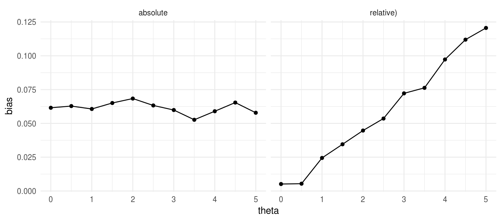

Chapter 5 Performance criteria
So far, we’ve looked at the structure of simulation studies and seen how to write functions that generate data according to a specified model (and parameters) and functions that implement estimation procedures on simulated data. Put those two together and repeat a bunch of times, and we’ll have a big set of estimates and perhaps also their standard errors and/or confidence intervals. And if the purpose of the simulation is to compare multiple estimation procedures, then we’ll have a set of estimates (SEs, CIs, etc.) for each of the procedures. The question is then: how do we assess the performance of these estimators?
In this chapter, we’ll look at a variety of performance criteria that are commonly used to assess how well an estimator works (or to compare the relative performance of multiple estimators). It is important to keep in mind that all of these performance criteria are themselves properties of the sampling distribution of the estimator—that is, assessments of how the estimator behaves if you repeat the experimental process an infinite number of times. We can’t observe this sampling distribution directly (and it can only rarely be worked out in full mathematical detail), but we can sample from it. The set of estimates generated from a simulation constitute a (typically large) sample from the sampling distribution of an estimator. (Say that six times fast!) We can use that sample to estimate the performance criteria of interest. However, because we will work with a sample of replicates rather than the full distribution, we will need to be aware of the precision of the estimates, or what we will call the Monte Carlo standard error (MCSE). Typically, we’ll want to use a large number of replications so that the MCSE is negligible compared to the magnitude of the parameter of interest.
Depending on the model and estimation procedures being examined, a range of different criteria might be used to assess estimator performance. The following sections look at four different types of criteria:
- Absolute estimation criteria, which are most useful for point estimates of location parameters,
- Relative estimation criteria, which are useful for point estimates of scale parameters and for assessment of the performance of variance estimators,
- Criteria for hypothesis testing procedures, and
- Criteria for confidence intervals.
5.1 Parameter estimation: absolute criteria
Consider an estimator \(T\) for a parameter \(\theta\). A simulation study generates a (typically large) sample of estimators \(T_1,...,T_K\). Define the following sample statistics:
- Sample mean: \(\displaystyle{\bar{T} = \frac{1}{K}\sum_{k=1}^K T_k}\)
- Sample median: \(\displaystyle{\tilde{T} = T_{(K/2)}}\)
- Sample variance: \(\displaystyle{S_T^2 = \frac{1}{K - 1}\sum_{k=1}^K \left(T_k - \bar{T}\right)^2}\)
- Sample skewness (standardized): \(\displaystyle{g_T = \frac{1}{K S_T^3}\sum_{k=1}^K \left(T_k - \bar{T}\right)^3}\)
- Sample kurtosis (standardized): \(\displaystyle{k_T = \frac{1}{K S_T^4} \sum_{k=1}^K \left(T_k - \bar{T}\right)^4}\)
Commonly used criteria for measuring the performance of \(T\) include the bias, variance, and mean-squared error (RMSE) of \(T\). Less commonly used criteria include the median bias and the median absolute deviation of \(T\). These criteria are defined in the table below.
| Criterion | Definition | Estimate | MCSE |
|---|---|---|---|
| Bias | \(\text{E}(T) - \theta\) | \(\bar{T} - \theta\) | \(\sqrt{S_T^2/ K}\) |
| Median bias | \(\text{M}(T) - \theta\) | \(\tilde{T} - \theta\) | - |
| Variance | \(\text{E}\left[\left(T - \text{E}(T)\right)^2\right]\) | \(S_T^2\) | \(\displaystyle{S_T^2 \sqrt{\frac{k_T - 1}{K}}}\) |
| MSE | \(\text{E}\left[\left(T - \theta\right)^2\right]\) | \(\left(\bar{T} - \theta\right)^2 + S_T^2\) | \(\displaystyle{\sqrt{\frac{1}{K}\left[S_T^4 (k_T - 1) + 4 S_T^3 g_T\left(\bar{T} - \theta\right) + 4 S_T^2 \left(\bar{T} - \theta\right)^2\right]}}\) |
| MAD | \(\text{M}\left[\left|T - \theta\right|\right]\) | \(\left[\left|T - \theta\right|\right]_{K/2}\) | - |
- Bias and median bias are measures of whether the estimator is systematically higher or lower than the target parameter.
- Variance is a measure of the precision of the estimator—that is, how far it deviates from its average.
- Mean-squared error (or root mean-squared error) and median absolute deviation are measures of overall accuracy—that is, how far an estimator deviates from the target parameter.
For absolute assessments of performance, an estimator with low bias and low MSE is desired. For comparisons of relative performance, an estimator with lower MSE is usually preferable to an estimator with higher MSE; if two estimators have comparable MSE, then the estimator with lower bias (or median bias) would usually be preferable.
It is important to recognize that these performance measures depend on the scale of the parameter. For example, if \(\theta\) is the difference in population means on some outcome, then its scale is in the same units as the outcome measure. Standardizing the outcome measure to have unit variance would therefore imply that the bias, median bias, and root mean-squared error are all in standard deviation units. Furthermore, changing the scale of the parameter will lead to changes in magnitude for most of the performance measures. For instance, suppose that \(\theta\) is a measure of the proportion of time that a behavior occurs. A natural way to transform this parameter would be to put it on the log-odds (logit) scale. However, \[\text{Bias}\left[\text{logit}(T)\right] \neq \text{logit}\left(\text{Bias}[T]\right), \qquad \text{MSE}\left[\text{logit}(T)\right] \neq \text{logit}\left(\text{MSE}[T]\right),\] and so on.
5.2 Parameter estimation: relative criteria
For parameters that measure scale, or that are always strictly positive, it often makes sense to quantify performance using relative criteria. Relative criteria are very similar to the criteria discussed above, but are defined as proportions of the target parameter, rather than as differences. Consider an estimator \(L\) for a parameter \(\lambda\), and define the sample statistics for \(L\) analogous to those for \(T\). The table below defines several relative performance criteria.
| Criterion | Definition | Estimate | MCSE |
|---|---|---|---|
| Relative bias | \(\text{E}(L) / \lambda\) | \(\bar{L} / \lambda\) | \(\sqrt{S_L^2 / \left(K\lambda^2\right)}\) |
| Relative median bias | \(\text{M}(L) / \lambda\) | \(\tilde{L} / \lambda\) | - |
| Relative MSE | \(\text{E}\left[\left(L - \lambda\right)^2\right] / \lambda^2\) | \(\frac{\left(\bar{L} - \lambda\right)^2 + S_L^2}{\lambda^2}\) | \(\displaystyle{\sqrt{\frac{1}{K\lambda^2}\left[S_L^4 (k_L - 1) + 4 S_L^3 g_L\left(\bar{L} - \lambda\right) + 4 S_L^2 \left(\bar{L} - \lambda\right)^2\right]}}\) |
Note that values of 1 for relative bias (and relative median bias) imply that the estimator is exactly unbiased. Both are measures of proportionate under- or over-estimation. For example, a relative bias of 1.12 means that the estimator is, on average, 12% higher than the target parameter.
5.3 Absolute or relative performance?
If you are designing a simulation of your own, should you use absolute or relative criteria for assessing estimator performance. So far, I’ve suggested that absolute criteria make sense for location parameters and relative criteria make sense for scale parameters. This is admittedly a very rough heuristic. The argument behind it is that if \(\theta\) is a location parameter, then its bias, variance, and MSE are likely to be (roughly) independent of its magnitude. If that’s true, then re-defining \(\theta\) by adding 1000 (or any arbitrary number) should not change the magnitude of its bias, variance, or MSE. On the other hand, adding 1000 will clearly change the relative bias and relative MSE. (Want smaller relative bias? Just add a million to the parameter!)
A more principled approach for determining whether to use absolute or relative performance criteria depends on assessing performance for multiple values of the parameter. In many simulation studies, replications are generated and performance criteria are calculated for several different values of a parameter, say \(\theta = \theta_1,...,\theta_p\). Let’s focus on bias for now, and say that we’ve estimated (from a large number of replications) the bias at each parameter value.

If the absolute bias is roughly the same for all values of \(\theta\) (as in the plot on the left), then it makes sense to report absolute bias as the summary performance criterion. On the other hand, if the bias grows roughly in proportion to \(\theta\) (as in the plot on the right), then relative bias is a better summary criterion.
5.4 Assessing variance estimators
Relative performance criteria are often used to assess the performance of variance estimators (e.g., squared standard errors of regression coefficient estimates) because variance estimators are strictly positive. For example, suppose that the simulation is examining the performance of a point-estimator \(T\) for a parameter \(\theta\) and an estimator \(V\) for the sampling variance of \(T\). In this case, we might not know the true value of the sampling variance of \(T\) prior to the simulation. However, we can use the variance of \(T\) across the replications (\(S_T^2\)) to estimate the true sampling variance \(\text{Var}(T)\). The relative bias would then be estimated by \(RB = \bar{V} / S_T^2\) and the relative MSE would be estimated by \(\left(\bar{V} + S_V^2\right) / S_T^2\).
Estimating the MCSE of the relative bias or relative MSE is complicated by the appearance of a sample quantity, \(S_T^2\), in the denominator of the ratio. To properly assess the overall MCSE, we need to take its uncertainty into account. One way to do so is to use the jackknife technique. Let \(\bar{V}_{(j)}\) and \(S_{T(j)}^2\) be statistics calculated from the set of replicates that excludes replicate \(j\), for \(j = 1,...,K\). The relative bias estimate, excluding replicate \(j\) would then be \(\bar{V}_{(j)} / S_{T(j)}^2\). Calculating all \(K\) versions of this relative bias estimate and taking the variance yields the jackknife variance estimator:
\[ MCSE\left(RB\right) = \frac{1}{K} \sum_{j=1}^K \left(\frac{\bar{V}_{(j)}}{S_{T(j)}^2} - \frac{\bar{V}}{S_T^2}\right)^2. \]
This would be quite time-consuming to compute if we did it by brute force. However, with a few algebra tricks we can find a much quicker way. The tricks come from observing that
\[ \begin{aligned} \bar{V}_{(j)} &= \frac{1}{K - 1}\left(K \bar{V} - V_j\right) \\ S_{T(j)}^2 &= \frac{1}{K - 2} \left[(K - 1) S_T^2 - \frac{K}{K - 1}\left(T_j - \bar{T}\right)^2\right] \end{aligned} \] These formulas can be used to avoid re-computing the mean and sample variance from every subsample.
5.5 Hypothesis testing
In simulations to assess the performance of hypothesis testing procedures, the main performance criterion is the rejection rate of the hypothesis test. When the data are simulated from a model in which the null hypothesis being tested is true, then the rejection rate is equivalent to the Type-I error rate of the test. When the data are simulated from a model in which the null hypothesis is false, then the rejection rate is equivalent to the power of the test (for given, non-null parameter values). Ideally, a testing procedure should have actual Type-I error equal to the nominal level \(\alpha\), but such exact tests are rare. There are some different perspectives on how close the actual Type-I error rate should be in order to qualify as suitable for use in practice. Following a strict statistical definition, a hypothesis testing procedure is said to be level-\(\alpha\) if its actual Type-I error rate is always less than or equal to \(\alpha\). Among a set of level-\(\alpha\) tests, the test with highest power would be preferred. If looking only at null rejection rates, then the test with Type-I error closest to \(\alpha\) would usually be preferred. A less stringent criteria is sometimes used instead, where type I error would be considered acceptable if it is within \((0.5\alpha, 1.5 \alpha)\).
Often, it is of interest to evaluate the performance of the test at several different \(\alpha\) levels. A convenient way to calculate the rejection rate is from a set of simulated \(p\)-values. Suppose that \(P_k\) is the \(p\)-value from simulation replication \(k\), for \(k = 1,...,K\). Then the rejection rate is for a level-\(\alpha\) test is defined as \(\rho_\alpha = \text{Pr}\left(P_k < \alpha\right)\) and estimated as \[r_\alpha = \frac{1}{K} \sum_{k=1}^K I(P_k < \alpha).\] Because the replications are independent, the estimated rejection rate follows a binomial distribution with MCSE \(\displaystyle{\sqrt{\rho_\alpha\left(1 - \rho_\alpha\right) / K}}\).
5.6 Confidence intervals
In simulations to assess the performance of confidence intervals, the main performance criteria are the coverage rate and the average width. Suppose that the confidence intervals are for the target parameter \(\theta\) and have coverage level \(\beta\). Let \(A_k\) and \(B_k\) denote the lower and upper end-points of the confidence interval from simulation replication \(k\), and let \(W_k = B_k - A_k\), all for \(k = 1,...,K\). The coverage rate and average width criteria are defined in the table below.
| Criterion | Definition | Estimate | MCSE |
|---|---|---|---|
| Coverage | \(\omega_\beta = \text{Pr}(A \leq \theta \leq B)\) | \(\frac{1}{K}\sum_{k=1}^K I(A_k \leq \theta \leq B_k)\) | \(\sqrt{\omega_\beta \left(1 - \omega_\beta\right) / K}\) |
| Expected width | \(\text{E}(W) = \text{E}(B - A)\) | \(\bar{W} = \bar{B} - \bar{A}\) | \(\sqrt{S_W^2 / K}\) |
Just as with hypothesis testing, a strict statistical interpretation would deem a hypothesis testing procedure acceptable if it has actual coverage rate greater than or equal to \(\beta\). If multiple tests satisfy this criterion, then the test with the lowest expected width would be preferable. Some analysts prefer to look at lower and upper coverage separately, where lower coverage is \(\text{Pr}(A \leq \theta)\) and upper coverage is \(\text{Pr}(\theta \leq B)\).
5.7 Exercises: Simulating Cronbach’s alpha
Cronbach’s \(\alpha\) coefficient is commonly reported as a measure of the internal consistency among a set of test items. Consider a set of \(p\) test items with population variance-covariance matrix \(\boldsymbol\Phi = \left[\phi_{ij}\right]_{i,j=1}^p\). The \(\alpha\) parameter is then defined as \[ \alpha = \frac{p}{p - 1}\left(1 - \frac{\sum_{i=1}^p \phi_{ii}}{\sum_{i=1}^p \sum_{j=1}^p \phi_{ij}}\right). \]
Given a sample of size \(n\), the usual estimate of \(\alpha\) is obtained by replacing the population variances and covariances with corresponding sample estimates. Letting \(s_{ij}\) denote the sample covariance of items \(i\) and \(j\)
\[ A = \frac{p}{p - 1}\left(1 - \frac{\sum_{i=1}^p s_{ii}}{\sum_{i=1}^p \sum_{j=1}^p s_{ij}}\right). \]
If we assume that the items follow a multivariate normal distribution, then \(A\) corresponds to the maximum likelihood estimator of \(\alpha\).
In these exercises, we will examine the properties of this estimator when the set of \(P\) items is not multi-variate normal, but rather follows a multivariate t distribution with \(v\) degrees of freedom. For simplicity, we shall assume that the items have common variance and have a compound symmetric covariance matrix, such that \(\phi_{11} = \phi_{22} = \cdots = \phi_{pp} = \phi\) and \(\phi_{ij} = \rho \phi\). In this case,
\[ \alpha = \frac{p \rho}{1 + \rho (p - 1)}. \]
5.7.1 data-generating function
The following function generates a sample of \(n\) observations of \(p\) items from a multivariate t distribution with a compound symmetric covariance matrix, intra-class correlation \(\rho\), and \(v\) degrees of freedom:
library(mvtnorm)
r_mvt_items <- function(n, p, icc, df) {
V_mat <- icc + diag(1 - icc, nrow = p)
X <- rmvt(n = n, sigma = V_mat, df = df)
colnames(X) <- LETTERS[1:p]
X
}
small_sample <- r_mvt_items(n = 8, p = 3, icc = 0.7, df = 5)
small_sample## A B C
## [1,] 1.3981142 2.47724590 2.26178261
## [2,] -0.3594373 -1.15013582 -0.78688760
## [3,] 0.4337564 -0.69410553 -0.00493949
## [4,] 0.2117151 -1.61679568 -1.57647828
## [5,] -0.7589249 0.07733664 -0.22762051
## [6,] 1.3854553 1.20900281 0.26674514
## [7,] 0.6157082 1.32798407 0.66608699
## [8,] 2.0188581 1.74054692 1.14555264To check that the function is indeed simulating data following the intended distribution, let’s generate a very large sample of items. We can then verify that the correlation matrix of the items is compound-symmetric and that the marginal distributions of the items follow t distributions with specified degrees of freedom.
big_sample <- r_mvt_items(n = 100000, p = 4, icc = 0.7, df = 5)
round(cor(big_sample), 3) # looks good## A B C D
## A 1.000 0.695 0.702 0.698
## B 0.695 1.000 0.696 0.697
## C 0.702 0.696 1.000 0.697
## D 0.698 0.697 0.697 1.000qqplot(qt(ppoints(200), df = 5), big_sample[,2], ylim = c(-4,4))5.7.2 Estimation function
van Zyl, Neudecker, and Nel (2000) demonstrate that, if the items have a compound-symmetric covariance matrix, then the asymptotic variance of \(A\) is \[ \text{Var}(A) \approx \frac{2p(1 - \alpha)^2}{(p - 1) n}. \] Substituting \(A\) in place of \(\alpha\) gives an estimate of the variance of \(A\). The following function calculates \(A\) and its variance estimator from a sample of data:
estimate_alpha <- function(dat) {
V <- cov(dat)
p <- ncol(dat)
n <- nrow(dat)
A <- p / (p - 1) * (1 - sum(diag(V)) / sum(V))
Var_A <- 2 * p * (1 - A)^2 / ((p - 1) * n)
data.frame(A = A, Var = Var_A)
}
estimate_alpha(small_sample)## A Var
## 1 0.906199 0.003299485The psych package provides a function for calculating \(\alpha\), which can be used to verify that the calculation of \(A\) in estimate_alpha is correct:
library(psych)##
## Attaching package: 'psych'## The following objects are masked from 'package:ggplot2':
##
## %+%, alphasummary(alpha(x = small_sample))$raw_alpha##
## Reliability analysis
## raw_alpha std.alpha G6(smc) average_r S/N ase mean sd
## 0.91 0.92 0.91 0.78 11 0.049 0.42 1.1## [1] 0.9061995.7.3 Replicates
The following function generates a specified number of replicates of \(A\) and its variance estimator, for user-specified parameter values \(n\), \(p\), \(\alpha\), and \(v\):
library(dplyr)
simulate_alpha <- function(reps, n, p, alpha, df) {
icc <- alpha / (p - alpha * (p - 1))
replicate(reps, {
dat <- r_mvt_items(n = n, p = p, icc = icc, df = df)
estimate_alpha(dat)
}, simplify = FALSE) %>%
bind_rows()
}We can use it to generate 1000 replicates using samples of size \(n = 40\), \(p = 6\) items, a true \(\alpha = 0.8\), and \(v = 5\) degrees of freedom:
reps <- 1000
alpha_true <- 0.8
alpha_reps <- simulate_alpha(reps = reps, n = 40, p = 6, alpha = alpha_true, df = 5)
head(alpha_reps)## A Var
## 1 0.8561990 0.001240724
## 2 0.8101130 0.002163423
## 3 0.8501061 0.001348090
## 4 0.8364654 0.001604614
## 5 0.8652237 0.001089880
## 6 0.7649902 0.0033137765.7.4 Estimator performance
- With the parameters specified above, calculate the bias of \(A\). Also calculate the Monte Carlo standard error (MCSE) of the bias estimate.
Calculate the mean squared error of \(A\), along with its MCSE.
Calculate the relative bias of the asymptotic variance estimator.
(Challenge problem) Use the jackknife to calculate the MCSE for the relative bias of the asymptotic variance estimator.
(Challenge problem) Modify the
simulate_alphafunction so that it returns a one-row data frame with columns corresponding to the bias, mean squared error, and relative bias of the asymptotic variance estimator. Use the function to evaluate the performance of \(A\) for true values of \(\alpha\) ranging from 0.5 to 0.9 (i.e.,alpha_true_seq <- seq(0.5, 0.9, 0.1)).
5.7.5 Confidence interval coverage
One way to obtain an approximate confidence interval for \(\alpha\) would be to take \(A \pm z \sqrt{\text{Var}(A)}\), where \(\text{Var}(A)\) is estimated as described above and \(z\) is a standard normal critical value at the appropriate level (i.e., \(z = 1.96\) for a 95% CI). However, van Zyl, Neudecker, and Nel (2000) suggest that a better approximation involves first applying a transformation to \(A\), then calculating a confidence interval, then back-transforming to the original scale (this is very similar to the procedure for calculating confidence intervals for correlation coefficients, using Fisher’s \(z\) transformation). Let
\[ \begin{align} \beta &= \frac{1}{2} \ln\left(1 - \alpha\right) \\ B &= \frac{1}{2} \ln\left(1 - A\right) \end{align} \]
and
\[ V^B = \frac{p}{2 n (p - 1)}. \]
An approximate confidence interval for \(\beta\) is given by \([B_L, B_U]\), where
\[ B_L = B - z \sqrt{V^B}, \qquad B_U = B + z \sqrt{V^B}. \]
Applying the inverse of the transformation gives a confidence interval for \(\alpha\):
\[ \left[1 - \exp(2B_U), \ 1 - \exp(2 B_L)\right]. \]
Modify the
estimate_alphafunction to calculate a confidence interval for \(\alpha\), following the method described above.With the modified version of
estimate_alpha, re-run the following code to obtain 1000 replicated confidence intervals. Calculate the true coverage rate of the confidence interval. Also calculate the Monte Carlo standard error (MCSE) of this coverage rate.
reps <- 1000
alpha_true <- 0.8
alpha_reps <- simulate_alpha(reps = reps, n = 40, p = 6, alpha = alpha_true, df = 5)- Calculate the average width of the confidence interval for \(\alpha\), along with its MCSE.